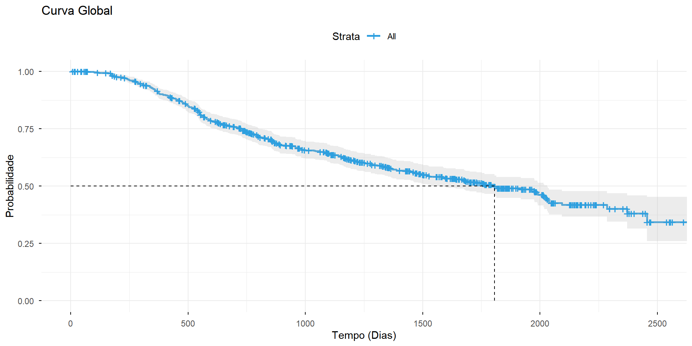
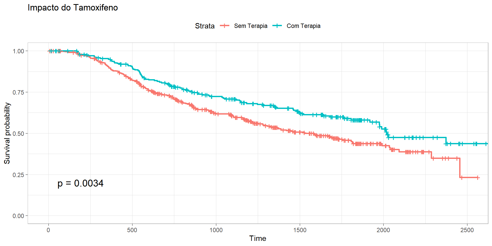
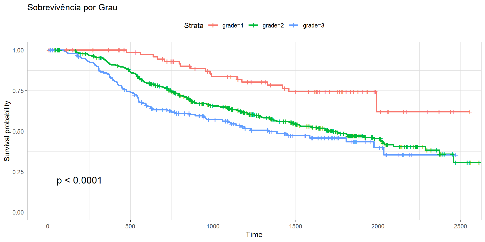

Universidade Federal Fluminense
status = 0): Ocorre quando a paciente não apresenta o evento até o final do estudo ou é perdida durante o seguimento.Estas são as variáveis que compõem o objeto de sobrevivência:
| Variável | Significado | Unidade/Tipo |
|---|---|---|
rfstime |
Tempo de sobrevida livre de recorrência | Quantitativa (Dias) |
status |
Indicador do evento clínico | 0 = Censura 1 = Óbito/Evento |
Fatores categóricos que estratificam os grupos de risco:
meno (Estado Menopausal): Classifica a paciente entre pré-menopausa (0) ou pós-menopausa (1), indicando o perfil hormonal basal.grade (Grau Histológico): Variável ordinal (1, 2 ou 3) que mede o nível de diferenciação das células tumorais (agressividade).hormon (Terapia Hormonal): Indica se houve tratamento adjuvante com tamoxifeno (0 = não; 1 = sim).Medidas numéricas e marcadores biológicos:
age: Idade da paciente (anos).size: Tamanho do tumor primário (mm).nodes: Contagem de linfonodos positivos (principal marcador de disseminação).pgr / er: Receptores de progesterona e estrogênio (fmol/L) — indicam a sensibilidade biológica do tumor ao tratamento.Nesta seção, descrevemos os procedimentos estatísticos utilizados para analisar a sobrevida livre de recorrência das pacientes, focando em métodos não paramétricos que permitem a inclusão de dados censurados.
A análise foi conduzida no software R, utilizando os pacotes survival para os cálculos estatísticos e survminer para a visualização das curvas e tabelas de risco.
Para verificar se as covariáveis qualitativas (como terapia hormonal e grau) influenciam a sobrevida, utilizamos dois testes complementares:
Para descrever o perfil clínico das pacientes em relação às variáveis contínuas (age, size, nodes, pgr, er), adotamos as seguintes medidas:
Nesta primeira etapa, observamos o comportamento da sobrevivência para todo o grupo de pacientes.

Estatísticas:

Conclusão: O teste Log-Rank indica diferença significativa. O uso de hormônio melhora visivelmente o prognóstico.

Conclusão: O Grau 1 (baixo) apresenta a melhor sobrevida, enquanto o Grau 3 (alto) tem queda acentuada.
Como a variável grade possui 3 níveis, aplicamos o teste par a par com a Correção de Holm-Bonferroni:
Pairwise comparisons using Log-Rank test
data: dados and grade
1 2
2 0.00044 -
3 2.6e-05 0.03537
P value adjustment method: holm Interpretação: Todas as combinações (1vs2, 1vs3 e 2vs3) apresentam diferenças estatisticamente significativas (\(p < 0,05\)), confirmando que cada aumento no grau histológico piora o prognóstico.
| Variável | N | Média | Desvio_Padrao | Mediana | Mínimo | Máximo |
|---|---|---|---|---|---|---|
| age | 686 | 53.05 | 10.12 | 53.0 | 21 | 80 |
| er | 686 | 96.25 | 153.08 | 36.0 | 0 | 1144 |
| nodes | 686 | 5.01 | 5.48 | 3.0 | 1 | 51 |
| pgr | 686 | 110.00 | 202.33 | 32.5 | 0 | 2380 |
| size | 686 | 29.33 | 14.30 | 25.0 | 3 | 120 |
Comentários Gerais:
| Variável | N | Média | Desvio_Padrao | Mediana | Mínimo | Máximo |
|---|---|---|---|---|---|---|
| age | 299 | 53.00 | 10.86 | 54 | 21 | 80 |
| er | 299 | 85.54 | 152.68 | 28 | 0 | 1091 |
| nodes | 299 | 6.52 | 6.14 | 5 | 1 | 36 |
| pgr | 299 | 70.53 | 122.21 | 19 | 0 | 912 |
| size | 299 | 31.46 | 15.75 | 27 | 5 | 120 |
Perfil do Grupo (Evento):
| Variável | N | Média | Desvio_Padrao | Mediana | Mínimo | Máximo |
|---|---|---|---|---|---|---|
| age | 387 | 53.09 | 9.52 | 52 | 31 | 80 |
| er | 387 | 104.53 | 153.08 | 42 | 0 | 1144 |
| nodes | 387 | 3.84 | 4.58 | 2 | 1 | 51 |
| pgr | 387 | 140.49 | 242.86 | 56 | 0 | 2380 |
| size | 387 | 27.68 | 12.84 | 25 | 3 | 100 |
Perfil do Grupo (Censura):